About
I am a Chemical Engineering Undergraduate student from National Institute of Technology, Andhra Pradesh, India (An Institute of National Importance), graduating in the academic year 2022, with extensive knowledge of the subjects in my curriculum and having interests in the fields of Data Science, Analysis, ML and AI, Operations Research, Supply Chain Management and Six Sigma, looking to build on my skills in these areas.
Student:
National Institute of Technology, Andhra Pradesh
- Birthday: 10th October 1999
- City: Chennai, India
- Age: 21
- Degree: B.Tech
- Email: rahulrahul101099@gmail.com
My Chemical Engineering journey begins where my passion for Chemistry had started during my 11th and 12th Grade. I had always firmly believed that as an Engineer, I should equip myself with certain skills in other domains useful to my field. Having said that, I had always worked towards bringing the flavor of programming, into solving analytical problems posed in the subjects of my Chemical Engineering course. I follow space exploration and rocket science passionately with interests in all fields of science, astronomy and history!
Skills
Here are some of the skills I have gained throughout my academic life
Resume
Sumary
Rahul N
Innovative student, passionate Data Analyst and Data Scientist.
- Chennai, India
- rahulrahul101099@gmail.com
Education
Bachelor of Technology, Chemical Engineering
2018 - 2022
National Institute of Technology, Andhra Pradesh
Studied core subjects of Chemical Engineering such as Heat Transfer, Mass Transfer, Thermodynamics, Transport Phenomenoa, Process Control, Equipment Design. Completed 5 Semesters
Most Recent SGPA: 9.33/10
CGPA: 7.93/10
Senior Secondary
2013 - 2017
Sri Chaitanya Techno School, Marathahalli, Bangalore
Studied Physics, Math and Chemistry
12th Grade: 94.4%
10th Grade: 10/10 CGPA
Professional Experience
Machine Learning Intern
June 2019 - July 2019
Verzeo Edutech (Authorized Education Partner, Microsoft)
- Successfully implemented a project for determining the topic of an article using Machine Learning in Python.
Extra Curricular Activities and Awards
ABSORB – Chemical Engineering Departmental Magazine | NIT – Andhra Pradesh
August 2020 - Present
- Lead Editor, Lead Designer, and Content Creator
Developer Student Club (Google Developers) | NIT – Andhra Pradesh
October 2019 – August 2020
- Core Technical Team Member
Entrepreneurship and Innovation Cell | NIT – Andhra Pradesh
October 2019 – August 2020
- Joint Secretary
Chemical Engineering Association | NIT – Andhra Pradesh
September 2019 – Present
- Joint Secretary
Task Force | NIT – Andhra Pradesh
October 2019 – Present
- Operations Team Co-ordinator
Recognized as a Microsoft Technology Associate in Programming with Python
January 2020
Regional Topper, Informatics Practices – CBSE 2017 12th grade examinations awarded by TVS Motor Limited.
August 2017
School-level Gold and Bronze Medals in the International Science and Mathematics Olympiad respectively
2013
Projects
Deep Eutectic Solvents, Preparation Methods and Applications
Worked on a team, researching the topic of DESs, their properties, their preparation methods, and their uses in the chemical industry.Study of Pollutants (PM2.5, PM10, CO, NO2, SO2 ) and its effect on fog formation using Python
A data visualization project to analyze the effect of levels of pollutants such as PM2.5, PM10, CO, NO2, SO2 on the levels of fog around a region using matplotlib, NumPy, and pandas in Python.Chemical Virtual Laboratory
An ongoing project to develop a mobile application using Flutter that can enable students to gain laboratory experience virtually.Damage Review of Hurricane Harvey
Undertook a data analysis project to find out the most affected states, provide the best possible measures and assess the damage caused by Hurricane Harvey; a category 4 hurricane that made landfall in August 2017 in the U.S.Covid 19 Data Analysis using Python
The goal of the project was to analyze the correlations between the infection rates of COVID – 19 and the happiness indices of countries worldwide, along with other factors such as Social Support, Healthy life expectancy, and Freedom to make life choices using tools such as Seaborn, NumPy, and pandas in Python.Supply Chain Management Strategy for Medical Technologies Corporation
Implemented a Supply Chain Management Strategy, using supply chain tools and methods to create and successfully manage a complex network of companies in a real-life case scenario.Other Projects
- Created an app inspired by the show Silicon Valley, named SeeFood, using Flutter and passing images through a neural network to identify different kinds of food.
- Developed a website named FMAIL that can send emails andchat messages using PHP and HTML.
- Worked on an application for DSC – NIT Andhra, to send event reminders using Google Firebase and Flutter.
Download My Resume
My Work on ABSORB, the Chemical Engineering Departmental Magazine - NIT Andhra Pradesh
Take a peek at the magazine here!
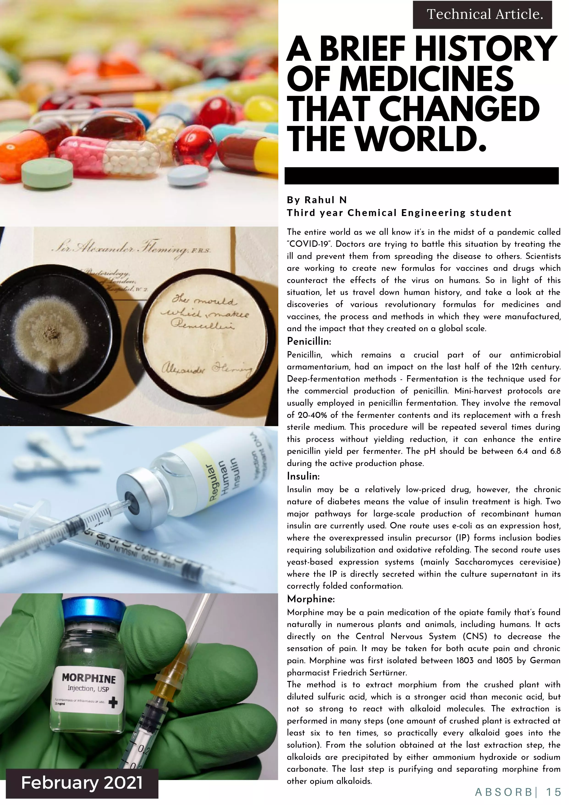
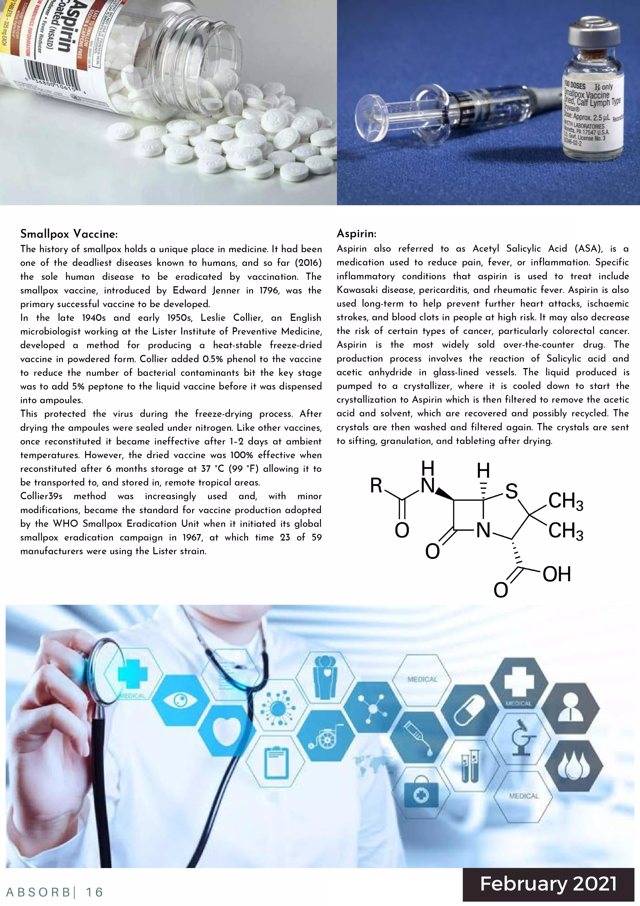
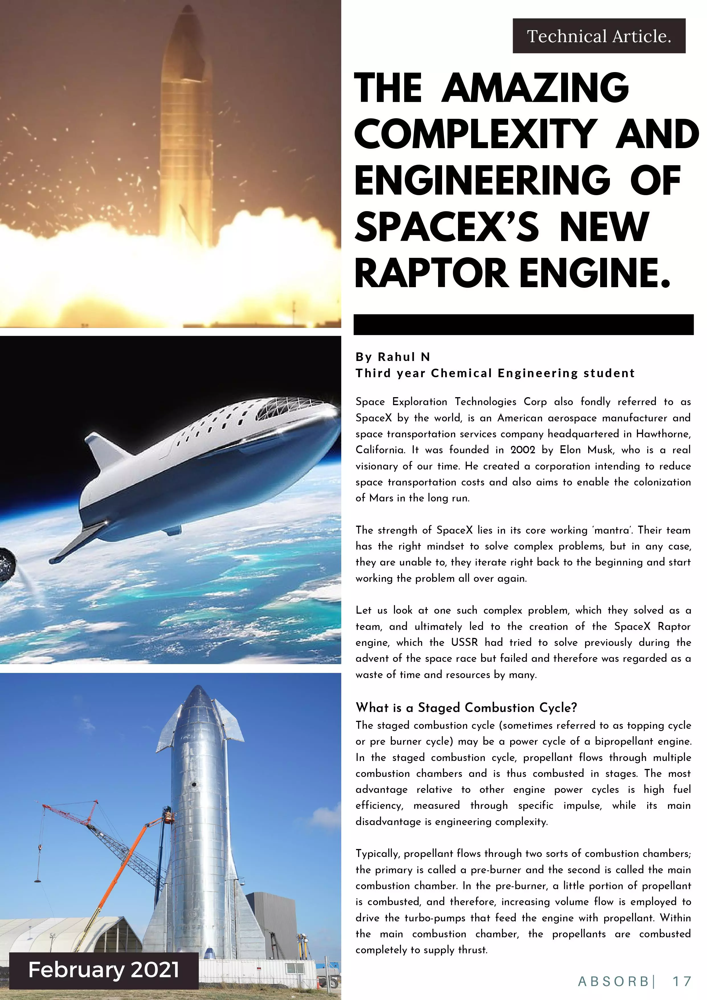
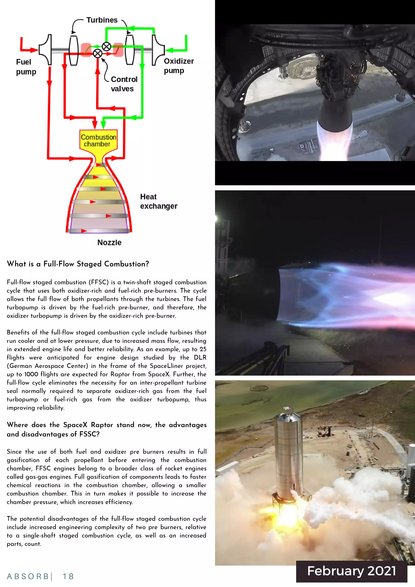
Accomplishments
My non - coursework accomplishments and certificates
Specializations
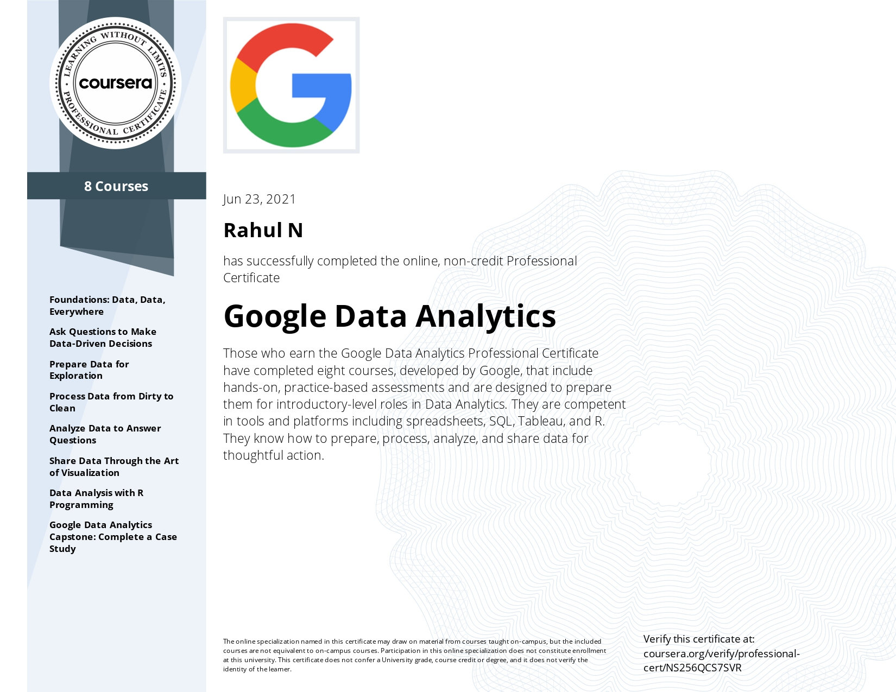
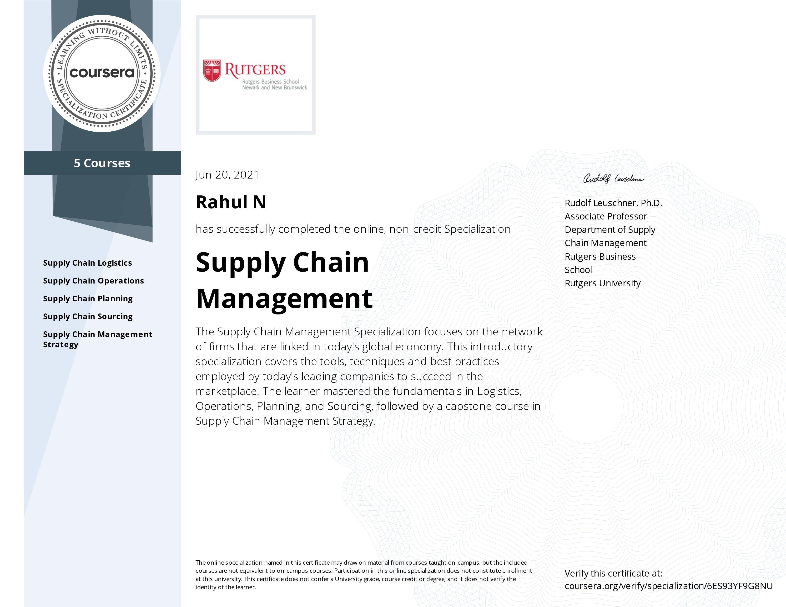
Course Certificates
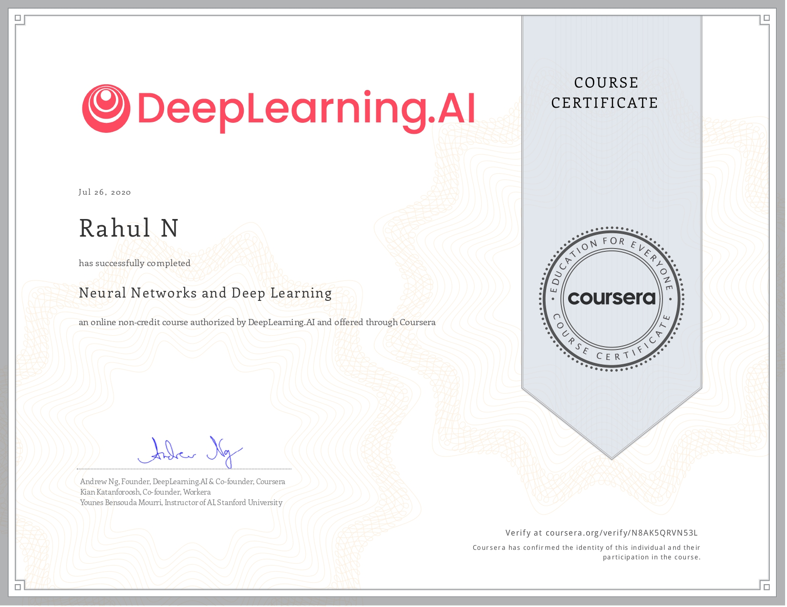
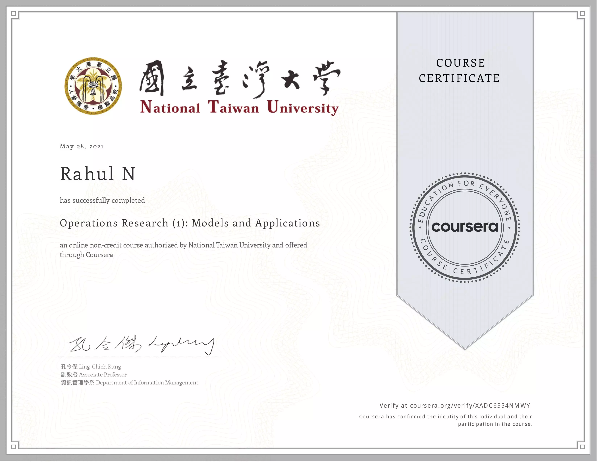
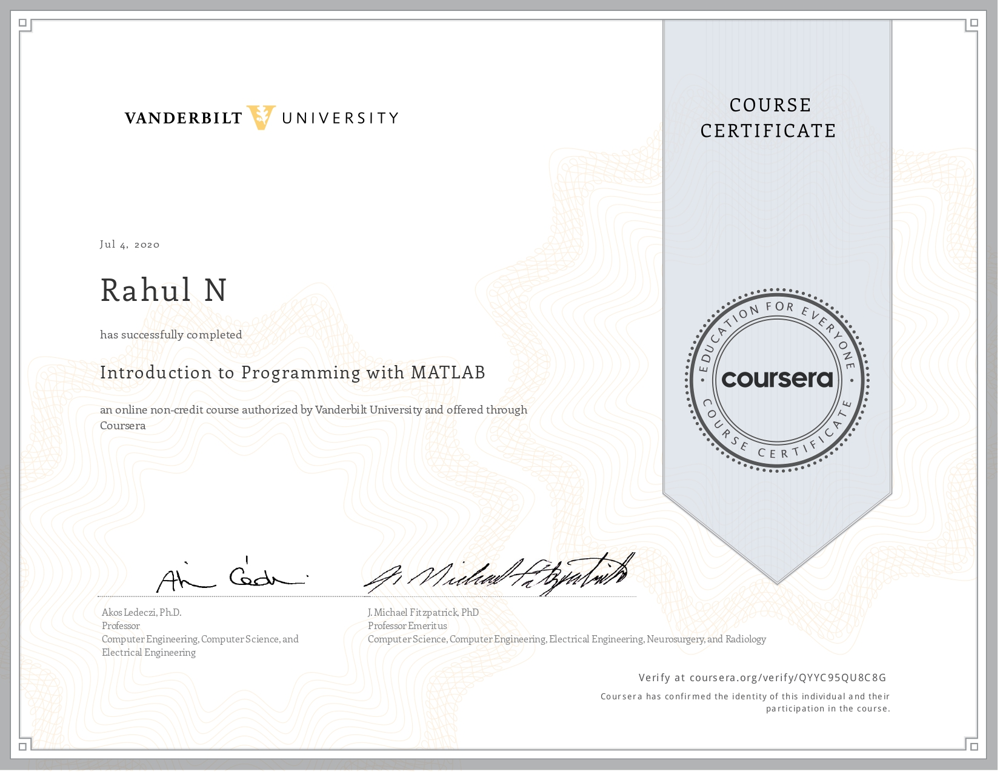
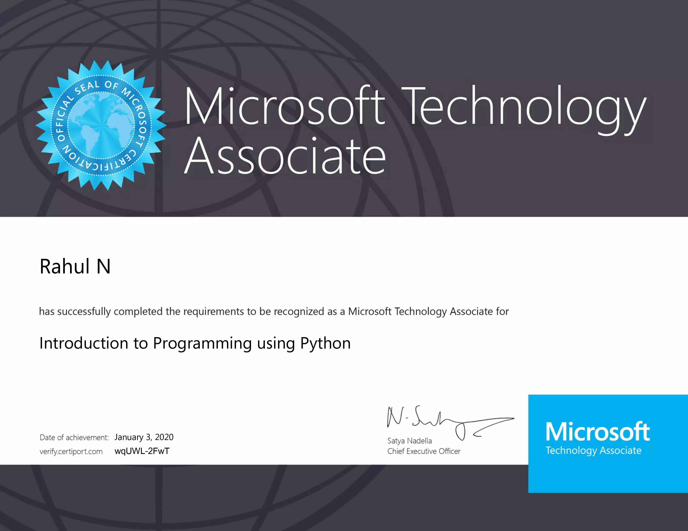
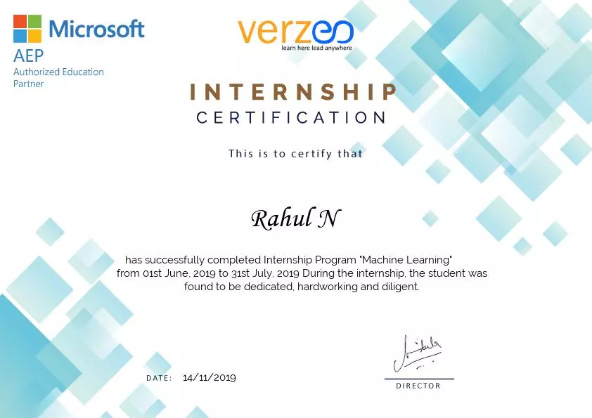
Other Certificates
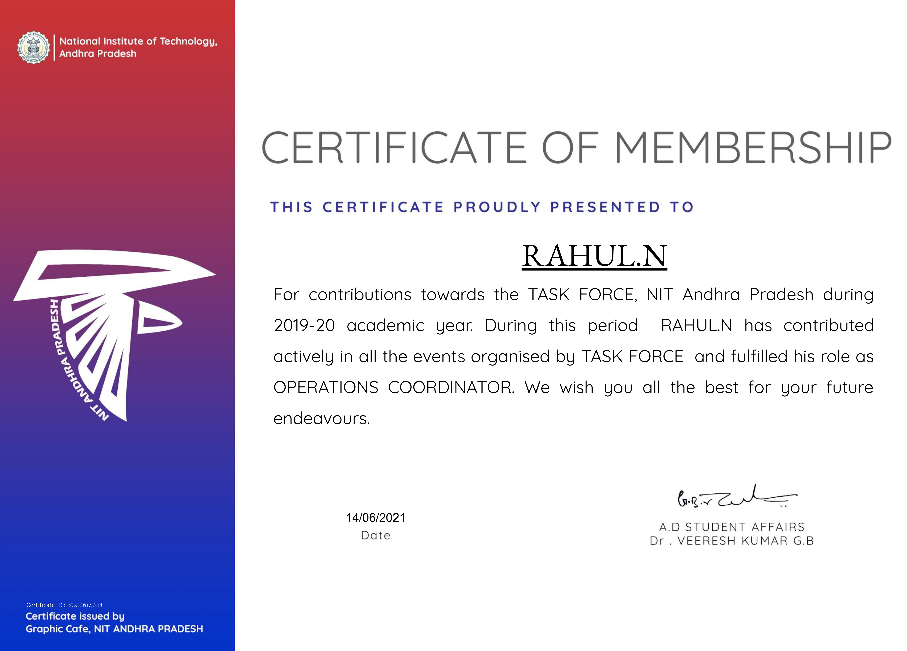